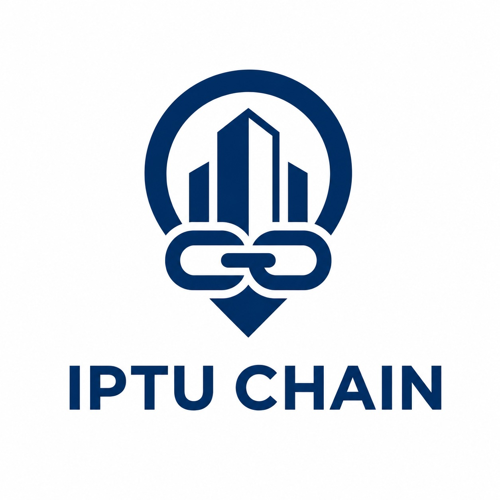

Plataforma autônoma de ancoragem e auditoria fiscal integrada à blockchain Stellar. Demonstrando transparência governamental através de provas criptográficas imutáveis e execução de Smart Contracts.
Abordagem descentralizada pelo cliente com carteira simulada. Ideal para demonstrações rápidas sem a necessidade de instalar a extensão Freighter.
Integração Web3 genuína. Requer a extensão de navegador Freighter instalada para assinar as operações criptográficas na Stellar Testnet.
Abordagem centralizada segura. O servidor atua como um Oráculo que detecta divergências e ancora o estado de forma autônoma.
A interface definitiva. O servidor delega a transação montada (XDR) para o frontend e o cidadão assina na extensão Freighter.
Acesse a documentação interativa (Swagger UI) para analisar as rotas do backend e acionar a simulação de fraude injetando valores ilegítimos diretamente no banco de dados.
O mapeamento e planejamento detalhado para a evolução da arquitetura do Oráculo para Smart Contracts nativos (Soroban) na rede Stellar.